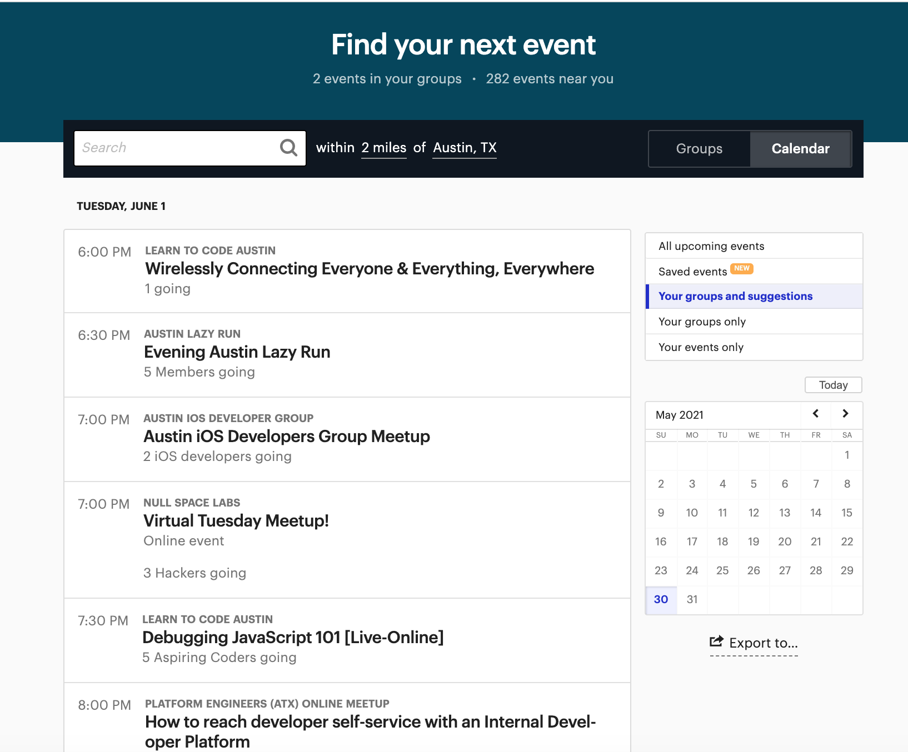
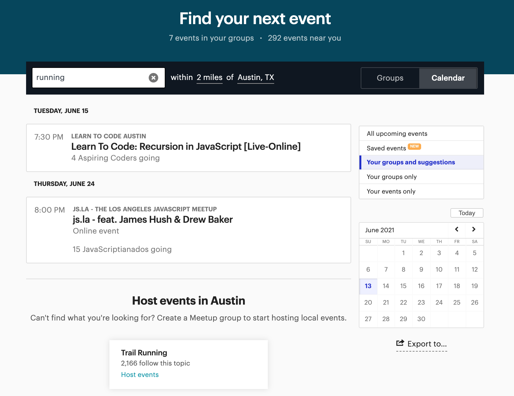
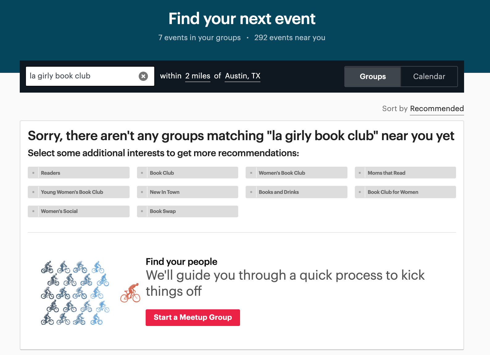
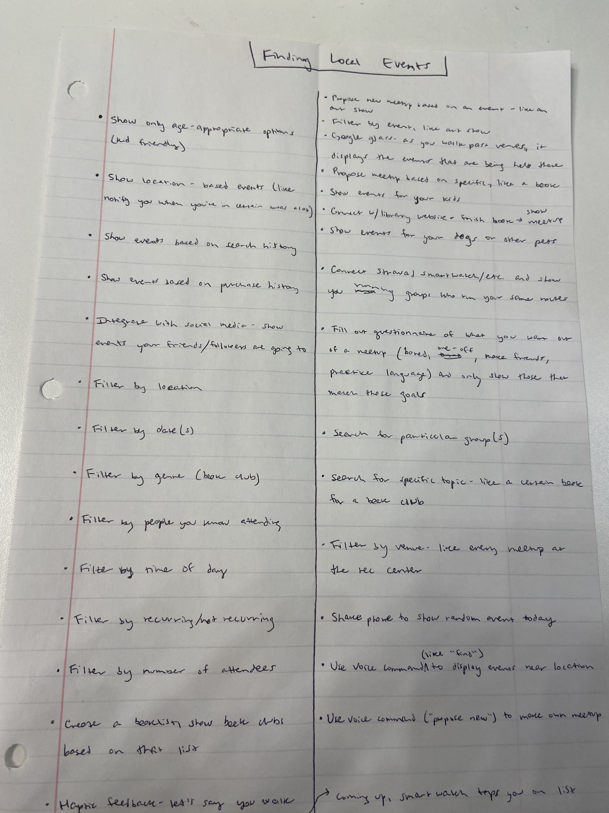
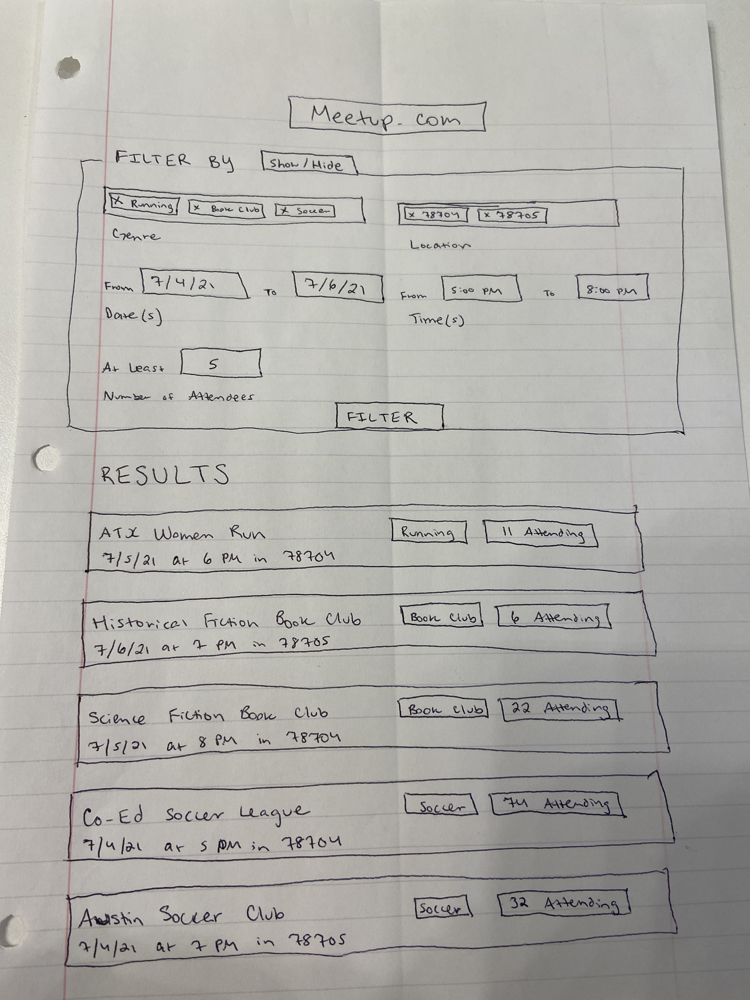

Problem
Meetup.com's search page has calendar and group views with limited filters, but many real use cases are difficult: finding events by genre, searching across date ranges, locating a specific group's next meeting, or finding groups when your location has changed. The site assumes users know what they're looking for and doesn't recover gracefully from common mistakes (wrong distance filter, misspelled search).
Research process
This project followed Georgia Tech's full HCI design lifecycle across five milestone assignments (M1–M5):
- M1 — Problem space: Defined task, user types, and motivations for local event search
- M2 — Needfinding: Participant observation on Meetup.com, user survey (novice users, genre/date/location priorities), competitive analysis of Facebook and Do512
- M3 — Ideation & prototyping: 20+ brainstormed ideas; paper prototype (filter + results list) and verbal prototype (goal-oriented questionnaire)
- M4 — Evaluation planning: Qualitative survey on paper prototype; empirical within-subjects plan comparing prototype vs. Meetup.com on clicks and result relevance
- M5 — Evaluation results: 25-participant qualitative survey; cognitive walkthrough of textual prototype; analysis and iteration recommendations
Needfinding findings
Participant observation revealed friction at every task: searching "running" required 6 extra clicks before a relevant event appeared; finding a book club by name returned an error despite showing the correct group below; groups in other cities were hidden until distance was set to "any distance."
Survey results (mostly novice users, 0–6 searches per year): genre is the top priority, then date/time, then location. Users search for fun (social and recreation/sports), typically on smartphones, a few days in advance—not urgent, but mobile-optimized. Meetup and Facebook were the most common search platforms.
Competitive analysis: Local sites like Do512 make browsing easier; Facebook requires filtering before showing local events; event data is fragmented across platforms.



Ideation
Brainstorming produced 20+ ideas spanning filters, notifications, voice commands, smartwatch haptics, and goal-oriented matching—before narrowing to filter-based and questionnaire-based prototypes.

Design decisions
The primary prototype is a filter + results list interface with five optional filters: genre, location, date(s), time(s), and number of attendees. Filters toggle in/out of view; OR within a filter, AND across filters. Each result shows all filter attributes at a glance.
A secondary prototype uses a goal-oriented questionnaire—matching events to user intent (meet people vs. get out of the house vs. learn a skill) rather than making users choose attributes manually.
Later iterations added a map-based view with location search, event icons by category, modal summaries, and date picker—designed for consistency with familiar map apps and direct manipulation.
Paper prototype
The primary prototype evaluated in M4/M5: collapsible filters (genre, location, dates, times, attendees) above a scannable results list. OR within filters, AND across filters.

Evaluation results
Qualitative evaluation with 25 participants (23 classmates, 2 family members) on the paper prototype:
- 92% agreed the interface looked easy to use; 84% agreed it looked enjoyable
- Genre, location, date, and time filters rated highly (72–92% "frequently" or "very frequently")
- Number of attendees filter less popular (40% frequent use)—as predicted
- Participants suggested adding cost, age group, and recurring vs. one-off filters
- Location filter drew the most iteration feedback (map view, neighborhoods, distance from current location)
Cognitive walkthrough identified tradeoffs in map icon granularity and confirmed filter discoverability worked well for novice users—the target demographic.
Lessons learned
Conducting actual needfinding—not just applying heuristics—surfaced failures I wouldn't have predicted from using Meetup casually (the 6-click running search, the location distance trap). Survey platform bias (Facebook group recruitment) was a real limitation I hadn't anticipated.
Qualitative evaluation produced actionable filter additions but also contradictory feedback (some found the design clean, others cluttered)—a reminder that the same interface reads differently depending on user context. The empirical comparison plan (prototype vs. Meetup on click count and result relevance) was designed but the qualitative phase alone validated core filter priorities.
Artifacts
Full M1–M5 assignment reports documenting each phase of the design lifecycle.
Design lifecycle (M assignments)
Additional HCI coursework
Written assignments from the same course covering gulf of execution/evaluation, invisible interfaces, and OMSCS accessibility.